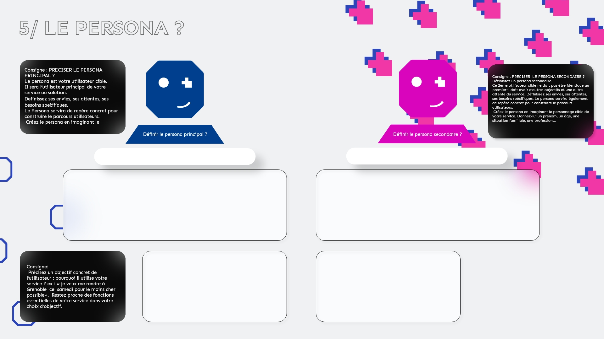

" 
5/Le persona ?
Consigne : PRECISER LE PERSONA PRINCIPAL ? Le persona est votre utilisateur cible. Il sera l’utilisateur principal de votre service ou solution. Définissez ses envies, ses attentes, ses besoins spécifiques. Le Persona servira de repère concret pour construire le parcours utilisateurs. Créez le persona en imaginant le personnage cible de votre service. Donnez-lui un prénom, un âge, une situation familiale, une profession…
Définir le persona principal
Nom du persona :
Le profil
Mon objectif?
Consigne : PRECISER LE PERSONA SECONDAIRE ? Définissez un persona secondaire. Ce 2ème utilisateur cible ne doit pas être identique au premier il doit avoir d’autres objectifs et une autre attente du service. Définissez ses envies, ses attentes, ses besoins spécifiques. Le persona servira également de repère concret pour construire le parcours utilisateurs. Créez le persona en imaginant le personnage cible de votre service. Donnez-lui un prénom, un âge, une situation familiale, une profession…
Définir le persona secondaire
Consigne: Précisez un objectif concret de l’utilisateur : pourquoi il utilise votre service ? ex : « je veux me rendre à Grenoble ce samedi pour le moins cher possible». Restez proche des fonctions essentielles de votre service dans votre choix d’objectif.
Nom du persona :
Le profil
Mon objectif?
Valider